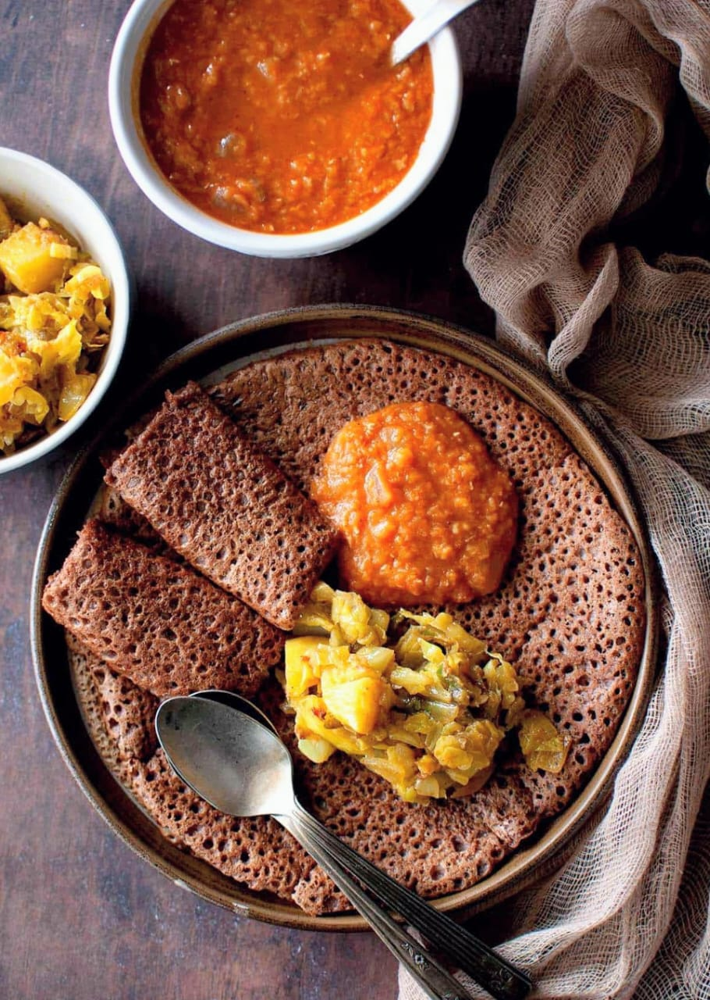
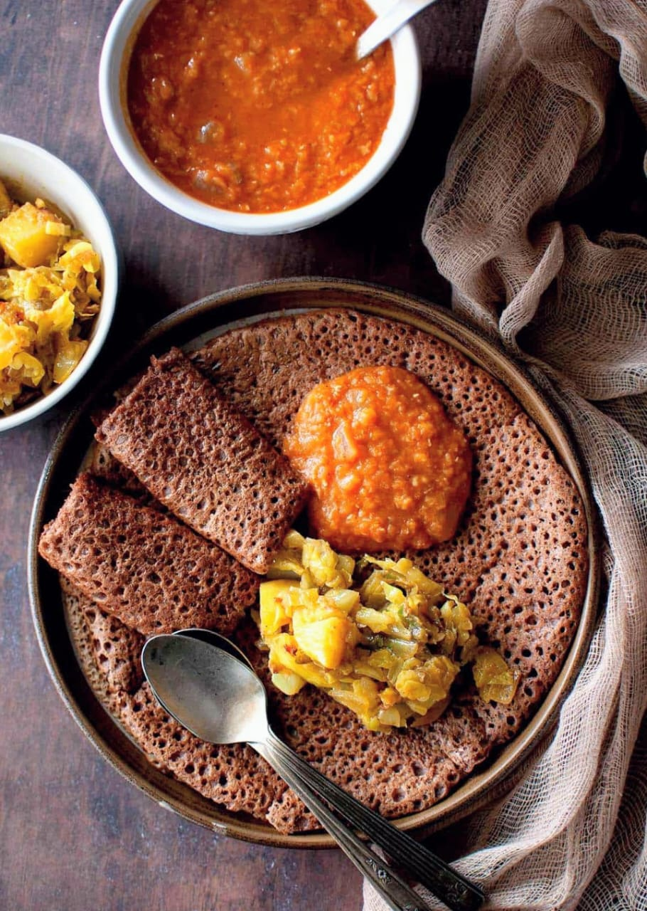

About AfriPlates
AfriPlates is a recipe recommendation platform built to celebrate the rich and diverse cuisines of Africa. Our goal is to make it easy for anyone to discover and prepare authentic African dishes, using the ingredients they already have at home.
AfriPlates is more than a recipe site—it’s a digital kitchen that brings Africa’s flavors to your table.
Food from Across Africa
 

Meet Our Team
Flavian Onyango
Frontend Developer
Designed the user interface

Paul Tibi
Backend Developer
Built the recipe API integration

Fabian
Content & Research
Curated authentic African recipes